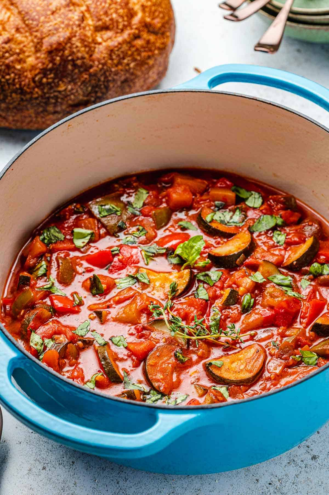

Ratatouille

Description
This easy ratatouille recipe is my take on the classic vegetable stew from Provence, France. Tomato, eggplant,
zucchini, and bell peppers simmer with aromatics until they soften, release their juices,
and become jammy and delicious.
Ratatouille recipes traditionally call for a long, slow simmer. In this weeknight-friendly version, I’ve adapted
the classic recipe using a very simple technique.I quickly boil the stew for 5 minutes, then I gently simmer
until the vegetables are nice and soft but still
maintain their shape. As an added bonus, you only have to wash one pot! What’s best: it’s even better the next
day. Freeze a big batch to brighten your January with summer’s best flavors. Or, enjoy this healthy vegetarian,
dairy- and gluten-free stew for breakfast,
lunch, and dinner all week long.
Ingredients
- Produce: For this simple stew, opt for the freshest seasonal produce you can get your hands on. High quality
eggplant, yellow onion, bell peppers (green, red, yellow or a combination), garlic, vine-ripe tomatoes, and
zucchini are what make this delicate dish so special.
- Fresh herbs: Thyme and basil add a fresh quality, lightening the velvety stewed vegetables.
- Olive oil: Use a nice extra virgin olive oil with some personality, like our slightly peppery Spanish
Hojiblanca.
- Acidity: Red wine and sherry vinegar add a depth of flavor, balancing the sweetness of the cooked
vegetables. The alcohol will cook off, but if you are avoiding alcohol entirely you can substitute with
vegetable or chicken broth. Simply season with more sherry vinegar to taste.
Direction
- Salt the eggplant: Peel 1 pound of eggplant, removing the peel entirely or in a striped pattern for a more
rustic look. Cut into 1-inch pieces and place in a large colander in your sink. When ready, sprinkle
generously with salt and leave for 20 minutes as you prep the remaining ingredients. When the eggplant has
sweated out its bitterness, pat dry with paper towels.
- Prep the produce: Meanwhile, finely chop 1 yellow onion. Slice 2 bell peppers into 1-inch pieces. Mince 6
garlic cloves (see our how to mince garlic guide for tips). Chop 2 pounds of tomatoes, saving their juice as
you go. Slice 2 zucchini into ½-inch half moons.
- Cook the onion and peppers: In a large heavy pot, heat 2 tablespoons of olive oil over medium heat. When the
oil is shimmering, add the onions. Cook, stirring regularly, until they’re translucent (about 5 minutes).
Add the bell peppers and cook until softened, about 4 minutes more.
- Add the remaining veggies: Add the garlic, tomatoes and their juice, zucchini, and eggplant. Stir in ½ cup
of red wine and 2 sprigs of thyme. Season with a pinch of salt and 1 teaspoon each of black pepper, paprika,
and dried rosemary.
- Boil then simmer: Raise the heat to medium-high and bring to a boil for 5 minutes, stirring once or twice.
Turn the heat to low, then cover and simmer until the vegetables are soft and the liquid has thickened,
about 20 minutes.
- Season: Remove the ratatouille from the heat, taste, and adjust salt to your liking. Add the sherry vinegar
and a generous drizzle of olive oil. Top with fresh basil.
- Serve: If you have time, cover and allow the ratatouille to rest in its warm pot for 1 hour or so before
serving. When you’re ready to serve, ladle into bowls. Optionally, top each with a sunny side up egg and
pass around some crusty bread for dipping. Enjoy warm, at room temperature, cold, any which way!